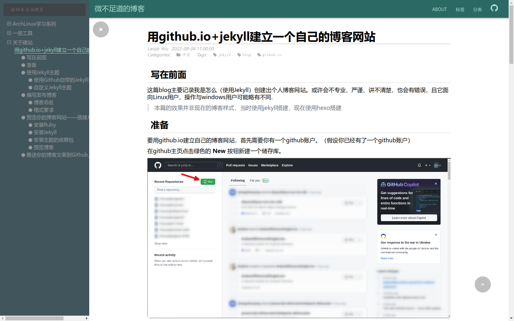

用github.io建立自己的博客
Table of Contents
1. 前言
22年8月那会我写了一篇博客介绍了自己是如何使用Jekyll引擎搭建自己的博客的，但是半 年多过去了，我的博客网站早就“翻天覆地”了，基本上和过去没有什么关系了。所以，我 打算将我折腾博客的一些内容写出来。
还有，使用github.io建立博客需要拥有一个Github账户，这里为了方便简单假设您已经有 了Github账户，并且熟悉git仓库和基本的github操作。就让我们开始吧。
2. Hexo使用
2.1. 开始
Hexo使用Node.js编写，是一个博客引擎。安装方法参考官网：
$ npm install hexo-cli -g
安装后可以在终端执行命令
$ hexo init blog
在名为 blog 的文件夹中创建默认的博客主题网站。现在则可以执行以下命令安装主题需 要的nodejs包
$ npm install
最后使用以下命令开始博客预览
$ hexo server
2.2. 使用主题
网上有众多主题，到底应该怎么使用呢？
最基本的，当我们找到一个主题之后应当在它的Github项目页面查看README文件了解这方面 的内容，不过大都脱离不开这样的一个流程：
- 克隆仓库到本地
- 将克隆出来的仓库放到博客根目录下的
theme目录下。 - 编辑主题和博客的配置文件。 这一步通常较为繁琐，一般要看主题提供了什么功能和什么注释。
2.3. 一些优劣/我选择它的原因
- 速度快 它使用nodejs构建，解释速度快（相较于Jekyll）
- 主题丰富（不知道算不算一个优势）
- 安装部署方便 他可以将博客一键布置到github上
- 配置相对麻烦 这似乎是个通病，只要换一个主题，就少不了大批量重新配置的需要，因为主题里面也 需要更改配置。
- 原生不支持Org文件写博客 这点可以算是打油的，这只是我的个人需求，实际上Markdown的功能也足够丰富了
2.4. 成果展示

Figure 1: 我过去使用hexo构建的博客图片
3. Hugo
3.1. 简介
Hugo是一个用Go语言编写的静态博客引擎。而相较于Hexo，它所拥有的为数不多的优势是原 生支持Org文档解析，但因为前段时间它生成博客出错，才让我抛弃它。它的主题相对会较 少，请酌情选择。
3.2. 安装
由于我是Arch Linux环境，所以我这里只提Arch的安装办法，其他的请参考官网，理论上各 大发行版是拥有hugo软件包的。
3.3. 使用
这里参考官网的教程，操作基本没有坑，除了选主题有点麻烦之外，这里便不过多赘述。 （实际上是我比较懒，不想写）
4. Emacs Org
4.1. 简介
这是我自己命名的一套方案，不一定好用，是我现用的方案（2023-04）
具体内容就是使用Emacs Org-mode的导出功能构建出一套博客网页。以我自己为例，网站的 Index首页索引界面和404 Not Found界面均为使用Org文档搭配html主题后生成的文件。而 首页则为纯手动管理，相对麻烦，也许什么时候我能弄上一个，脚本去管理它，而不用手动 管理链接。
4.2. 使用
从网上下载你想要使用的主题需要的css文件和js文件到博客下的任意一个目录，然后创建 一个setup文件，像是该文章所引用的setup file：
# -*- mode: org; -*- #+AUTHOR: 不要在意我的头像QwQ #+HTML_LINK_HOME: / #+LANGUAGE: zh #+OPTIONS: html-style:nil #+HTML_HEAD: <link rel="stylesheet" type="text/css" href="/theme/org-html-theme-dull.css"/> #+HTML_HEAD: <script type="text/javascript" src="/theme/org-html-theme-dull.js" defer></script> #+HTML_HEAD: <link rel="shortcut icon" href="/img/icon.jpg"> #+LATEX_COMPILER: xelatex #+LATEX_HEADER: \usepackage[UTF8]{ctex}
在这里，文件第一行用于指定编辑模式，然后依次设置了用户名、主页链接、显示语言、主 题需要的选项共三行，并设置了网站的图标，最后的两行是给Latex导出为Pdf而设置的。在 编写好文件后，就可以在每篇文章里面添加这样一行内容进行引用。
#+SETUPFILE: ../path/to/file.setup
值得注意的是，如果是要原封不动地导出到html的链接则可以使用“绝对路径”，但是如果
是要给Emacs使用的链接需要相对链接，因为在网页中可以使用 / 表示网站的根目录（即
只有域名的url）
4.3. 本地预览
我会采用两种方式进行本地预览：nginx和http-server
nginx的学习与配置或许可以参考其他的文章或者我未来写一篇nginx的教程。
而http-server办法相对简单的多。首先在终端用root权限运行（请确保你安装了nodejs）
# npm install http-server -g
确认安装成功和就可以在博客根目录下使用命令 http-server 启动一个http服务器，默
认端口是8080，终端会有服务的地址显示的。顺带一提，它在访问没有 index.html 的目
录时且没有 404.html 文件时会自动生成返回当前目录下的所有文件与文件夹。可以当做
局域网的文件单向传输器。
4.4. 上传到Github
你可以选择连带着org文件一齐上传，而我则选择了另外一种办法：也整一个public文件夹， 专门用于上传，而本地则维持着有点差异的文件系统，方便维护。并建立一个脚本方便快速 更新，内容如下：
#!/usr/bin/zsh #================================================================ # Copyright (C) 2023 YouLanjie # # 文件名称：build.sh # 创 建 者：youlanjie # 创建日期：2023年04月02日 # 描 述：构建博客 # #================================================================ app_name="${0##*/}" # Show an INFO message # $1: message string _msg_info() { local _msg="${1}" [[ "${quiet}" == "y" ]] || printf '[%s] INFO: %s\n' "${app_name}" "${_msg}" } # Show a WARNING message # $1: message string _msg_warning() { local _msg="${1}" printf '[%s] WARNING: %s\n' "${app_name}" "${_msg}" >&2 } # Show an ERROR message then exit with status # $1: message string # $2: exit code number (with 0 does not exit) _msg_error() { local _msg="${1}" local _error=${2} printf '[%s] ERROR: %s\n' "${app_name}" "${_msg}" >&2 if (( _error > 0 )); then exit "${_error}" fi } usage() { usagetext="\ usage: build.sh [options] options: -m 创建博客到public目录下（不建议使用） -b 构建博客列表与首页 -u 导出未更新的org为html页面 -U 强制更新所有的html页面 -h 帮助信息" echo $usagetext exit $1 } mk_public() { _msg_info "检测是否存在public文件夹..." if [[ ! -d public ]] { if [[ -f public ]] { _msg_error "文件\`public\`已存在且非文件夹" 1 } _msg_warning "文件夹\`public\`不存在" _msg_info "将创建public文件夹" if [[ ! -d public ]] { _msg_error "无法创建" 1 } } else { _msg_info "结果为真，将进行构建操作" } _msg_info "清除public目录" find public |grep -v "\.git"|sed -n "s/public\//.\/public\//p"|sort -r|sed "s/^/rm -d '/"|sed "s/$/'/"|zsh _msg_info "创建目录树" find post -type d|sed -n "s/post\//.\/public\/post\//p"|sed "s/^/mkdir -p '/"|sed "s/$/'/"|zsh _msg_info "复制文件" find post -type f|grep -v "\.org"|sed "s/^/cp -r '/"|sed "s/ 'post\/\(.*\)$/ 'post\/\1' 'public\/post\/\1'/"|zsh _msg_info "复制首页" cp index.html public/ _msg_info "复制404页" cp 404.html public/ _msg_info "复制主题与图片" cp -r theme/ public/ cp -r img/ public/ _msg_info "Done!" } update_file() { emacs -Q -nw ./src/fastsetup.el "$1" --eval "(eval-buffer \"fastsetup.el\")" } update() { #update_file index.org #echo $file_list for name (post/**/*.org) { out=$(echo $name|sed "s/\\.org$/.html/") if [[ (! -f $out) || ($name -nt $out) ]] { _msg_info "Export '$name' ..." update_file $name } } } build() { _msg_info "清空源文件" cat /dev/null > src/post2.org _msg_info "构建列表中" _msg_info "获取文件头并处理中" file_list=(post/**/*.org) line_max=$(echo $file_list|wc -l) for name ($file_list) { title=$(head -n 5 $name |grep -i '#+title: ') declare -l title="$title" title=$(echo $title|sed 's/^#+title:[ ]*//') date=$(head -n 5 $name |grep -i '#+date: ') declare -l date="$date" date=$(echo $date|sed 's/^#+date:[ ]*//;s/<\(.*\)>/\1/;s/\([^ ]*\) [一|二|三|四|五|六|日] /\1 /') if [[ $date == "" ]] { continue } desc=$(head -n 5 $name |grep -i '#+description: ') name=$(echo $name|sed 's/^/..\//') if [[ $desc != "" ]] { declare -l desc="$desc" desc=$(echo $desc|sed 's/^#+description:[ ]*//') printf '- /%s/ [[%s][%s]]\\\\\\\\\\n %s\n' "$date" "$name" "$title" "$desc" >> src/post2.org } else { printf "- /%s/ [[%s][%s]]\n" "$date" "$name" "$title" >> src/post2.org } } list=$(cat src/post2.org|sort -r) echo $list > src/post2.org _msg_info "列表输出完成" _msg_info "导出首页中..." # emacs index.org -nw --eval "(progn (org-html-export-to-html) (kill-emacs))" update_file index.org _msg_info "Done!" } while {getopts 'mbuh?' arg} { case $arg { m) mk_public ;; b) build ;; u) update ;; h|?) usage 0;; *) usage 1;; } exit 0 } if [[ $@ == "" ]] { _msg_error "No options!" usage 1 } else { _msg_error "Bad options!" usage 1 }
该脚本除了org外的将会依照原有目录树将所有源文件复制到public目录下。然后就可以使
用public目录进行最后的预览。最后使用public推送到github上。
该脚本现在的用法是半自动更新首页与半自动更新（导出）文章的功能。脚本的链接在这里。